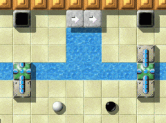
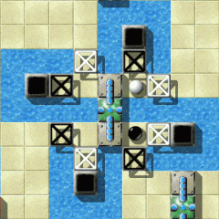
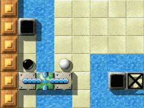

Level of the MonthEach month, we take a closer look at excellent Enigma levels. Excellent levels are those with the highest average user ratings and the greatest number of ratings altogether. Thus it is your vote that determines the Level of the Month. So please rate the levels you play and do not forget to submit your ratings together with your scores at the end of each month. You can find all previous Levels of the Month in our archive. April 2008: “Turnstiles for Two - Rhapsody on Turnstiles in Blue and Green”by Ronald LamprechtThe world of the “black ball” has lots of facets; races, meditating, visiting temples and mazes, deciphering, space adventures, alone or as a twosome, we're even blessed with nightmares, to name a few. But what's about the world of music? Not that much? Not at all. But even if no catchy tune reveals itself easily to us we can come up with a rhapsody.

Enigma VI # 77
Pupil: “A what?” 
A solo in a duet
Oh no! Let's swiftly leave this horrible place and return to much more
pleasant things.
Hey, that's my text. Get out. Well, turnstiles … it's a difficult story. You can not
only transport yourself over water, but the other marble as well. However, it
may happen that the other one can't return without some help. “Aside from experience it's a matter of sure instinct”It's quite a while ago since I've been playing “Turnstiles for Two”. But now that I've taken a closer look at the level again, I remembered, that most of all I had problems to stay on the spot after turning down one of the turntiles' arms. Espicially that applies to the complex in the middle of the bottom half, where you don't have much room to maneuver. No wonder the availability of the pins makes such a great difference between easy and difficult mode.
Additionally foresighted planning is the word! It's not only a question of getting to the oxyds but also of getting back there. It took me quite some time to figure out how to fit these “islands” in the centre of the level into my plannings.
But the real difficulty about “Turnstiles for Two” is - once again - to make it to the final oxyd. Aside from experience it's a matter of sure instinct: although you've got the hang of it, it still won't work each time. You'll have to rush to the right place as quickly as possible, to catch the transporter to the island with the last oxyd.
By the way, there's another level by Ronald Lamprecht (“Cold Meditation”), where you'll have to take a similar action, to be pushed into the final block of ice.

Hmm … and now?
So, let's see and listen to what our two musicians have to offer. The beginning is quite relaxed. In the initial chords, one sets the tune, and the other one follows. But now our two musicians approach the central motif. Each one chooses his own musical way, supported by the other. Two threads of suspension, individually enriched with smaller soli, reach toward the central motif. Our two marbles don't stay there for long, but introduce the remaining themes of their rhapsody: a short solo, an interesting and tasty intermezzo and last but not least the technically most ambitious part of their recital, a melody peppered with lots of sharps, which requires the most concentration and precision from both sides. “I appreciate his devotion to fully exploring new elements to the game”I was glad to be asked to comment on “Turnstiles for Two” not only
because of my life in music, but because it's actually my favorite
“Teamplay Level” in Enigma. I know that Ronald intended it as a
Rhapsody, and the description seems apt, but this level brings to
my mind something quite a bit older. Lately, I've been rediscovering
Bach's 2-part Inventions, and these make a fine analogy to what Ronald
has created.
In Bach, the two hands play interrelated, contrapuntal melodies - each
hand is limited by its range, just as the white and black marble here
have limits on what they can and can't do - where they can and can't go.
Together the two melodic lines create a harmonic progression as they
wend their way independently through the piece. And if you manage to
make it through some technically treacherous, but gorgeous music,
there's more often than not a very satisfying major chord awaiting you
in the final bar.
One thing I appreciate about Ronald's levels is his devotion to fully
exploring new elements to the game or finding new uses for these. This
level is a wonderful exploration of the attributes of the green
turnstile. Almost every action requires both marbles to work together.
Ronald has also made the level more challenging (and also more fun)
by setting it up so that the maximum number of corresponding oxyds
among the top four is one pair.
No matter what, you're going to have to negotiate your way back to the
top and then down again to finish up. The biggest challenge for me is
the cluster of 4 oxyds in the middle of the water in the center of the
bottom part of the level - it's really tricky to avoid knocking one or
the other of the marbles in, and then, you have to start over again.
One other very appealing aspect to “Turnstiles for Two” is that the
level is gorgeous to look at. You might as well be vacationing in the
Greek isles with all the aqua and white. Congratulations to Ronald for
such an enjoyable Enigma experience!
Now, after all motifs are presented, our two musicians will resolve them stylistically with confidence. They often return to the central motif, skillfully varying it. We approach the finale, in which one of them once again presents mastery of his instrument. The audience acknowledges our two musicians with well-earned applause as they leave the stage. What a fantastic show!

Life in Concert: “The Be Sharps”
But to reach concert level, lots of practice is needed; because mistakes will be unforgivingly punished: One starts anew at the beginning. Carelessness (declining concentration or missing anticipation) at strategic positions like the central motif, has disastrous effects (Shift-F3).
As I always say, Yet, he's right. How often did I involuntarily jump into the cold water at the 'sharp'? Be it from a lack in precision or from forgetting to switch to the other marble—who knows why. Hence: Relax, keep calm and don't act rashly. All caffeine junkies among us (like myself) should prepare by reducing their coffee consumption. And to get a steady hand, maybe have a glass vin rouge ;-). The central motif costs some more nerves as well (no picture here, as we don't want to spoil too much). Your 'orchestration' of the 'instruments' has to be planned well and with foresight, if you don't want to spoil your way back to the the upper and lower motifs. If an 'instrument' isn't 'tuned' right, the traditional consequences (Shift-F3) inevitably arise. The level is very appealing, thanks to the use of a white and a black marble. Each of them has areas, which are mutually inaccessible, but require the other marble's cooperation to reach them (like e.g. the 'sharp'). Well now, gamers, tune your 'instruments' and get ready for the downbeat of your duet. “The green turnstile had proven to be more valuable than I would ever had thought it could be”As a tiny dissonance I mention the vortex; as it's not compulsory to use it. But maybe I didn't comprehend the composition in its complete entirety. So I'll simply reemerge back into the world of Enigma's sounds with greatest indulgence. It may sound crazy, but “Turnstiles for Two” is a commissioned work. In
the aftermath of release 1.00 we received reports about spurious crash
problems with turnstile levels. While debugging the turnstile code the
green turnstiles attracted my attention. There had just been one level
that made use of it - “Zig Zag”, and it made just indirect usage of it.
I questioned the existence of this variation with all the extra code that
it required. But after a short time I found a first direct usage pattern
for a one marble level resulting in the level “Revolver” in mid February
2007.
But I expected the real value of the green turnstile to show up in multi
marble levels. Thus I claimed on March 13th that we should write an
introductionary level for green turnstiles that should demo some useful
patterns. Two days later I tried to write this level. After three hours
of work I had finished two new levels, “Cold Meditation” and “Polar
Bear's Paradise”. Next day Andreas desperately asked if “Cold Meditation”
should be the announced demo level.
Of course not! I just had collected some patterns and got distracted by
other level ideas. But now I got the idea of a pattern arrangement and
with every pattern that I added to the level I found new green turnstile
patterns. Two funny evening sessions later “Turnstiles for Two” was ready
for a first shipment on the early hours of March 17th. The green
turnstile had proven to be more valuable than I would ever had thought
it could be.

A seesaw for childs and adults
of (nearly) all ages On both evenings I interrupted my work looking for some inspiration. I
sat down at the piano and both times I started playing by heart one of
my favorite pieces - Gershwin's “Rhapsody In Blue”. It just did fit -
the various independent patterns to a common theme bound together by a
global framework, black and white, and additional emotions like desire and indetermination.
In fact Gershwin did first name his piece “Nocturne in Blue and Green”
the colors standing for the emotions. With the green turnstiles being
the main subject I just had to subtitle my level “Rhapsody on turnstiles
in blue and green”.
Several times users did express their astonishment about the time frame
in which I wrote some of my best levels. But that is the very nature of
creativity. You spend uncounted hours playing and developing Enigma and
suddenly you have the idea for a level. BTW Gershwin wrote his
rhapsody in 24 days and nights! But he finished setting down his own
piano solo part months after the world premiere.
“Turnstiles for Two” had not been finished after
two evenings, either. I
detected one subtle point, that I first did not know how to solve - a
fair, solvable oxyd distribution. Just shuffling all 16 oxyds does not
work. E.g. if all the upper oxyds build pairs there would be no reason
to return to the upper part later on. But it is a key point of the level
that you have to return to the upper part after investigation of the
lower part. Finally I wrote a small special Lua function that takes
appropriate influence on the oxyd distribution. But this problem of fair
oxyd distributions had now been set on Enigma's to-do list. It has been a
month of work in October to find and code a general algorithm that
solves this quite complex problem for all upcoming levels.
Looking back after a year has gone I notice that the level became more
difficult than I planned it to be. Especially the easy mode should be
easier to solve, the vortex is unnecessary and the difficult mode should
force the player to use all different patterns instead of using the easy
mode ones. I increased the friction within the critical southern rosette
and simplified the central part for the easy mode. I hope that will give
more players a chance to enjoy the versatility of “Turnstiles for Two”.
Thanks for the good ratings, and have fun!
Many thanks to Ronald Lamprecht for this musical masterpiece. NObby |